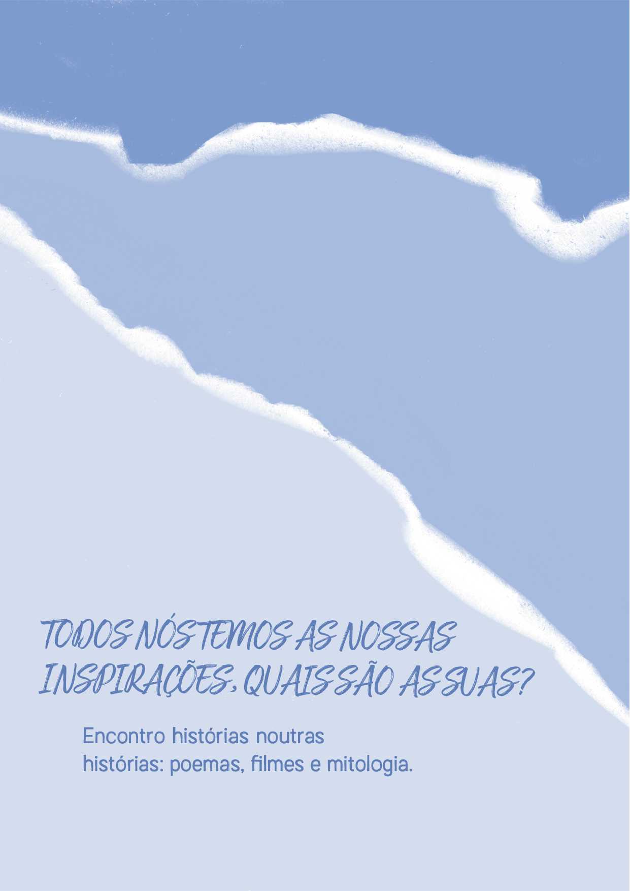
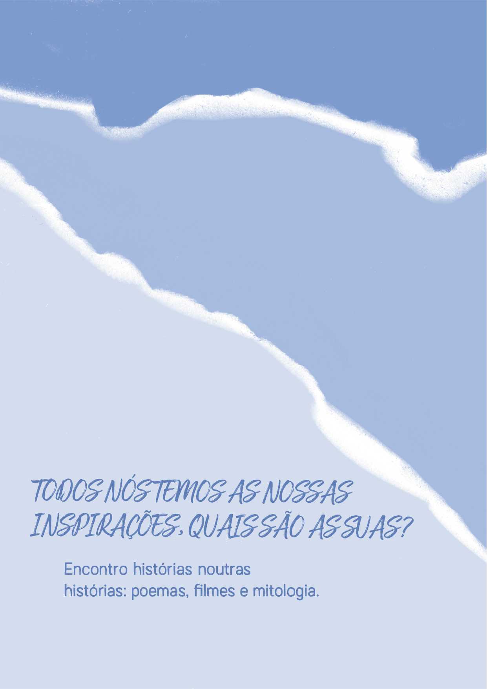

A booklet is a small book or leaflet, usually only a few pages long, which is used to provide information in a concise and accessible way. It can be used for a variety of purposes, such as instructions, promotional information, user manuals, event programs and more. Booklets are characterized by their compact size and simple format, which makes them easy to distribute and handle.
Briefing
This work was done for the subject Professional Practice and Ethics.
"Based on the topics discussed in class and reading the recommended bibliography, the aim is to
prepare and carry out an interview with a professional (or group of professionals) directly or indirectly linked to the field of design
directly or indirectly linked to the field of design and then publish it in booklet format.
It is encouraged to interview professionals with proven experience and outside each student's individual sphere of expertise. A list of people/entities not to be interviewed will be provided, so as not to repeat interviews from previous years."
Questions and answers from Susana Carvalhinhos
"What are the most common challenges you face as an illustrator? And how do you overcome them?"
"Although it's natural to work on certain themes or symbols that make up the language of our creative universe and make it unique in a way, it's crucial to constantly search for them so that this universe continues to expand. I don't want to feel like I'm repeating myself. And when you choose to be an illustrator without an agent, for example, you have all the tasks involved in finding and choosing work, promoting it, etc. It's also very important to have a community of illustrators, so that you can exchange ideas and information."
"What was it like for you to illustrate Alfredo Keil's “A Pátria acima de tudo”? What feelings and difficulties arose?"
“This book was one of the first I illustrated, yet it had the difficulty of all books: the search for and concern with the coherence of aesthetic and poetic discourse. Finding this coherence immediately is a rarity, each book always represents a completely unique path. This collection has a particularity, which is that it has a specific number of colors to be used, which can be a challenge, yes.”
“In your works, there is a very specific focus on female characters, which implies that you are defending feminism. Have your works always been designed to convey a message? If so, has it always been like this?”
“For me, illustrating has always been about telling stories. So it makes perfect sense to give voice to female characters, because in the past they've had very little space and freedom to tell their own stories. In terms of editorial work linked to this theme, I had the opportunity to illustrate a book about gender equality (in access to work), 'The Long Road to Equality - Women and Men in the 21st Century', written by Isabel Alçada and Ana Maria Magalhães, which turned out to be a challenge and brought up interesting reflections.”
“On your social networks, especially Instagram, Susana makes ceramic objects, has this always been a passion of yours? Or did it emerge over time?”
“I started making ceramics more than 20 years ago, it's a passion that's been with me for a long time, and much of its beauty lies in its unpredictability. In the rest of my work, I have more control over the end result, and with ceramics I've learned to accept mistakes more gracefully.”
“We all have our inspirations, what are yours?”
“I find stories in other stories: poems, films and mythology.”
“What is design to you? And would you advise anyone to enter this world?”
“It's about finding solutions. I would advise, of course.”
My colleagues and I had to put together a booklet with all the questions and this is the result:


 
